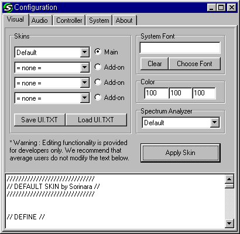

| C O N F I G U R A T I O N | H E L P |
|
|
| V I S U A L |

|
|
Color Adjustment (RGB) - You can change the color tone of current skin in real-time by adjusting the ratio (%) of RGB (Red, Green, Blue). System Font - You can change the font used for main display, playlist and lyric display. By default, Soritong uses fonts that are specified by each skin. Apply - Change the skin/font/color/spectrum analyzer and see the change immediately. * Reopen UI.TXT - Load UI.TXT. * Save UI.TXT - Save any changes to UI.TXT. * Text Editor - You can edit UI.TXT directly from here. [Warning] We DO NOT encourage average users to
use the sections marked with *. |
| A U D I O |
|
Channel - Stereo and Mono is available. If your speakers are set to mono or if you want to further reduce the CPU usage, set this option to Mono. Default value is Stereo. Buffer Size - Increasing the buffer size will reduce the chance of skipping (or choppy sound in other words). Priority - You can set the priority of the decoding engine and the sound output. When you use Soritong and other applications at the same time, the sound may become choppy. In such case, set this priority higher. Output - You can select the output device Soritong should use. If you have a multiple sound cards, this option may come handy. Also if you select "Disk Output", you can save songs in WAV format to the selected folder. Note that volume, pan, EQ, and other features that affects sound also affect the Wav output as well. |
| C O N T R O L L E R |
|
Joystick - If you want to use a joystick as a remote control, check on the box. Currently, only the basic controls (prev, stop, play, next) are supported. |
| S Y S T E M |
|
File Association - These buttons set the indicated file association with Soritong program. By setting the file association, you can just double click on files (mp3,mp2,m3u...) to play them. You can also change the icon for these file types. Registry - You can delete the Soritong entry from Windows registry. This may be used for troubleshooting and uninstalling. Language - You can select the language you want to use. You can add on different language packages, or you can make your own. Options - You can toggle the system options. |
| Copyright (c) 1999 Sorinara. All rights reserved. |